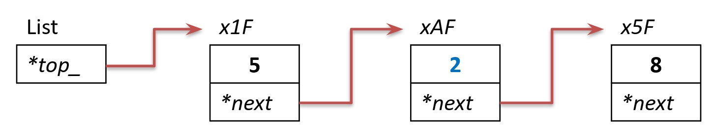

Динамические структуры данных
Односвязный список
Тимофеев Александр Алексеевич
Экзамен
Список – это?
Есть ли порядок?
Односвязный список
Обход всех элементов
Обход всех элементов
Вставка в начало
Проверка
Добавление в конец
init-list
Удаление с конца
Поиск

Поиск и удаление
Вставка
Большая проверка
Самостоятельно
Практика